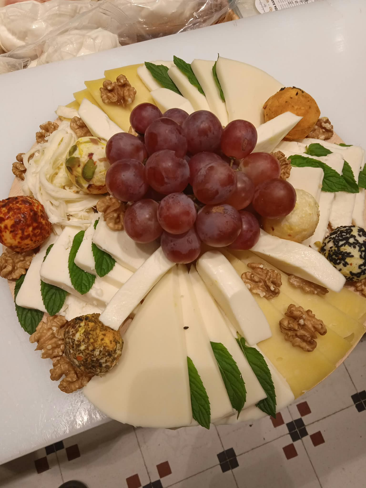

Hakkımızda
Bazen bir semtin hafızası, gelişen yapılarda değil; kapısı her gün aynı saatte açılan mütevazı dükkânlarda saklı.
İstanbul'un Suadiye'sinde, Ayşe Çavuş Caddesi üzerinde neredeyse yarım asırdır aynı yerde duran Dilek Şarküteri bir hatıra defteri gibi. Raflarındaki peynirler, zeytinler, mezeler yalnızca birer gıda maddesi değil; bir semtin, bir esnafın ve içe işlenmiş bir esnaflık ahlakının sessiz tanıkları.
Bu hikâyenin başkahramanı Ali Yüce. Ordulu bir Anadolu çocuğu; dükkân 1977'de, İstanbul'un bugünkü kadar kalabalık olmadığı zamanlarda açıldı. Aradan geçen on yıllar boyunca şehir değişti, sokaklar dönüştü, alışkanlıklar bambaşka bir yöne savruldu; ama Dilek Şarküteri hep aynı yerde, aynı ciddiyetle yoluna devam etti.
Ali Bey'in hayatı düz bir çizgide değil. Asıl mesleği tekstil: yurt içinde ve yurt dışında çalışmış, kendi çapında fabrikalar kurmuş, mağazalar açmış. Onca iş deneyimine rağmen işin gerçek anlamını Suadiye'deki bu küçük şarküteride bulmuş. Zamanla dükkân sadece bir alışveriş noktası değil, sıcak bir buluşma adresi hâline gelmiş.

Dilek Şarküteri'yi sıradan bir dükkândan ayıran şey, Ali Yüce'nin ürünlere bakış biçimi. Burada rafa giren her ürün, peynir ya da zeytin fark etmez, tesadüfen seçilmez. “Sadece satmıyoruz” diyor Yüce; peynirin nerede üretildiğinden, hayvanların hangi bitkilerle beslendiğine kadar iz sürüyor. Karaman koyununun endemik bitkilerle beslendiği obruk peynirinden söz ederken gösterdiği titizlik, işine duyduğu saygının en açık delili.
Yüksel Bey ve onun yetiştirdiği Sami Usta'nın ellerinden çıkan mezeler yıllardır müdavimlerin dilinden düşmüyor. Kadınbudu köfteden dolmaya, zeytinyağlılardan ev yapımı reçellere kadar uzanan bu lezzet dünyası, bir mahalle mutfağı geleneğini ve Anadolu'nun zenginliğini birlikte taşıyor.
Bir müşterinin yurt dışından döner dönmez ilk olarak buraya uğrayıp kadınbudu köfte alması, dükkânın insanlar için ne ifade ettiğinin güzel bir örneği.
Bu bolluk gösteriş için değil. Ali Yüce, farklı kooperatiflerden gelen ürünlere ayrı bir kıymet veriyor; Anadolu'da üretimin devam etmesi gerektiğine inanıyor, kadın emeğini desteklemeyi bir sorumluluk olarak görüyor. Üreticilerle kurduğu iş birlikleri bunun somut örneği. Ona göre iyi esnaf, sadece satan değil, üretimi de ayakta tutandır.
Peki bunca yılın ardından neden hâlâ tek bir yerde? Cevabı, eski usul esnaflığın özü gibi: “İşin başında durmak gerekir.” Şubeleşmenin getireceği büyümenin aynı kaliteyi korumayı zorlaştıracağının farkında.
%90
Müşteri dönüşlerinin olumlu oranı. Beğenilmeyen ürün rafta tutulmuyor.
1000+
Dükkân içinde bulunan ürün çeşidi.
1977
Ayşe Çavuş Caddesi'ndeki ilk gün. O günden beri aynı adres.
Hayal gösterişten uzak: semti değiştirmeden bulunduğu yeri büyütmek. İnsanların oturup kahvaltısını yapabileceği, kahvesini içebileceği, toplantılar düzenleyebileceği; daha geniş ama yine aynı ruha sahip bir mekân. Büyük zincirlerin çokluğuna inat, küçük bir gurme dükkânı.
Bugün İstanbul'da sayısız market, onlarca alışveriş merkezi var. Ama azalan bir şey var: güven duygusu. Oysa Suadiye'de hâlâ her sabah kepengini aynı heyecanla açan bir dükkân, raflarına ürünü özenle dizen bir adam var.
Bazı dükkânlar kapanınca bir işletme kaybolmaz; bir semtin ruhu eksilir. Dilek Şarküteri hâlâ yerinde durarak bize şunu hatırlatıyor: gerçek kalite, yıllara meydan okuyan bir emek.
Talip Bayram — “Suadiye'de bir Lezzet Nöbetçisi”